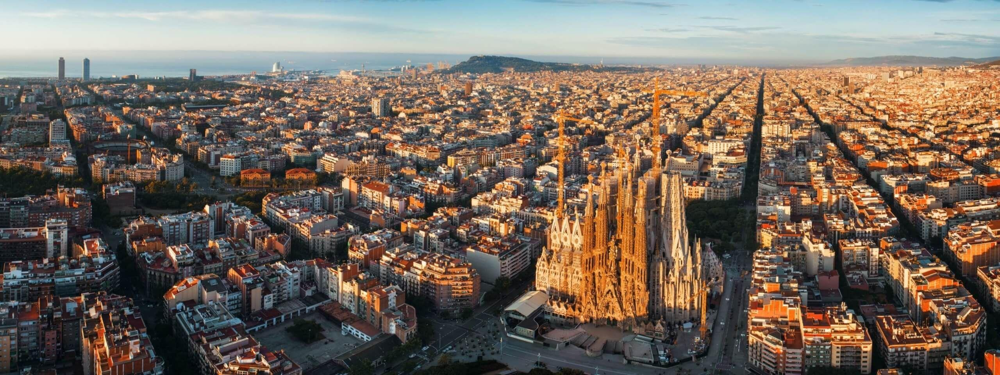

Destinos turísticos de España
España tiene muchos lugares interesantes para visitar. Estos son algunos de los destinos que recomendamos conocer.
Barcelona
Barcelona es una ciudad conocida por sus playas, su arquitectura y lugares famosos como la Sagrada Familia y el Parque Güell.

Madrid
Madrid es la capital de España. Se destaca por sus museos, plazas, parques y edificios históricos.

Sevilla
Sevilla es famosa por su cultura, el flamenco y sus monumentos, como la Plaza de España y la Giralda.

Granada
Granada es una ciudad muy visitada por la Alhambra, un importante conjunto de palacios y jardines históricos.